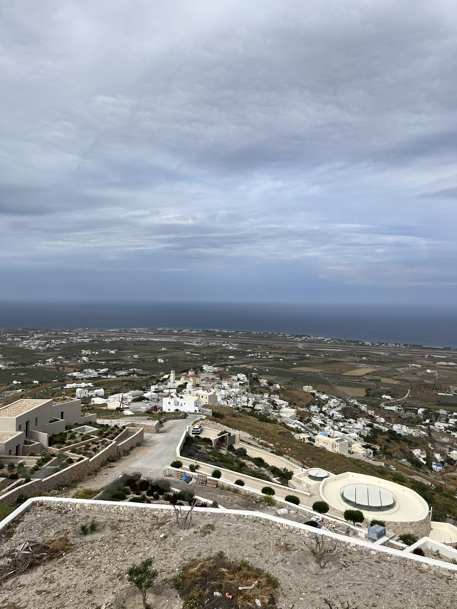

hi mom,
it’s smark today. we planned to fly back to athens at 9 ish today so the plan before that was just to hit everything else on santorini before then.
we said goodbye to the hotel (not before dad got to check out the rly cool hotel bathroom) and then headed to the far southwestern tip of the island. there we found a lighthouse, although we couldn’t go inside and could only enjoy the view from outside from this small picnic table.
the panoramic view from the southwestern tip of the island looks pretty sick tho.
from here, we wanted to go to the famous red beach. however, dad made the mistake of routing the gps straight there when the correct action would have been to go to a nearby parking lot and taking the short, curated hike along to coast to the beach. we almost drove down the extremely steep gravel road to the beach but some friendly hikers told us the right way to go and we were lucky to escape unscathed. here’s a couple pics (including dad trying to commit homicide):

after a short hike we arrived at the red beach. the cliffs were indeed a vibrant red, as were roughly half the pebbles on the beach itself, but from far away it seemed mostly black.
even so, it was beautiful, especially contrasted against the blue greek waters, so we spent a while on the beach relaxing and taking pictures.
our next stop was the old village of megalochori, which was recommended to us by the hotel lady. we drove through the narrow, steep streets before parking and adventuring by foot. the buildings were really nice and felt somehow more inviting and enjoyable than the touristy version in oia.

we stopped for lunch at this streetside restaurant and dad messed up again. we had a rly good meal, including this delicious tuna that the server recommended. we also got this spicy pepper cheese dip that somehow we didn’t get bread or pita for. the pitas we got for the souvlaki were really good so dad asked for some bread and they brought actual bread, so he asked for some pitas instead. they let us keep the bread, and as a token of apology they offered an extra cheese dip. we were all pretty full so grandma said no but dad overturned her no and accepted the offer because he thought the waiter meant free bread. when the waiter brought out pitas and an entire cheese dip, dad was so embarrassed that he had to leave early and waited in the car.
the offending cheese dip in question: (and the fish and souvlaki which were both good too)
after this, we stopped by the fortress in pyrgos, which is a small town on the highest mountain in santorini. again we climbed up the wrong side and with great effort reached the top, where we took some pics of yet another church. dad is so mature.
anyway, we had a late lunch, so we just went to kamari (a black sand beach) to pick up some ramen and pitas to bring to athens for a late night snack. unfortunately, gaia winery, one of our targets, closed a little earlier than we expected, so we had to scrap that and headed to the airport a bit early.

and here’s me and smatt facing off in battle (i won, obviously).

finally we arrived at the airport, and let me tell you, i’ve never been so embarrassed in my life. we were getting ready to board, when this airport lady came up to us and told us that we had too much luggage. we actually pulled a real karen but as a whole family. I think grandma was a bit drunk too from the wine cuz she was super into it, and we were basically three inches from getting booted off the plane. finally we calmed down enough a pay a small fee for the luggage and finally got on the plane... the plane right was uneventful but we literally couldn't get out of the parking lot cuz there was hella construction and a bus was blocking the only way out

and thus ended a great day marred by a slight hiccup at the end hehe
love,
smark (and others)